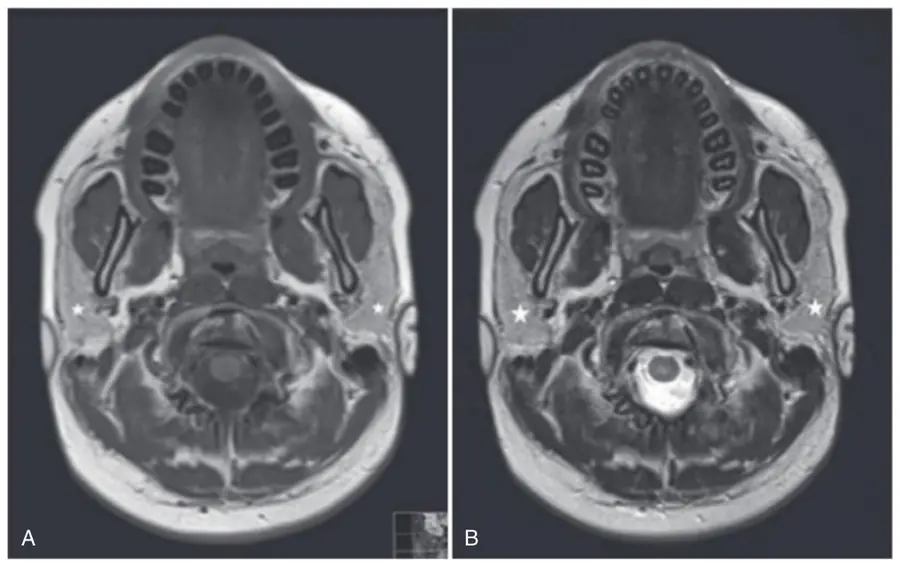

نسخه استخراجشده؛ ترجمه یا تأیید علمی انجام نشده است. وضعیت: captured
روشهایی که برای غدد بزاقی به کار رفتهاند: تصویربرداری تخت، سونوگرافی با وضوح بالا (HRUS)، MDCT، MRI، پزشکی هستهای، سیالوگرافی، و تازهترینشان، سیالندوسکوپی.

۱) تصویربرداری تخت — برای شناسایی سنگهای کلسیفیه. در دسترس، ارزان، دوز پایین، و امکان ارزیابی ساختارهای استخوانی مجاور. محدودیت: سنگهای غیرکلسیفیه را نمیبیند — تا ۴۰٪ سنگهای پاروتید و ۲۰٪ سنگهای سابمندیبولار.
۲) HRUS — «برای ارزیابی اولیهی غدد بزرگ مفید است، بهویژه وقتی ناهنجاری مشکوک سطحی باشد.» میتواند کیست را از نئوپلاسم (کیست، ناحیهای خوشمرز و بدون اکو است) و خوشخیم را از بدخیم تفکیک کند، بیوپسی را هدایت کند، و در شناسایی تغییرات سندرم شوگرن مفید است. مزیت بزرگ: بدون پرتو یونساز. دو محدودیت: سنگها را کشف نمیکند و ضایعات عمقی را نمیبیند.
۳) MDCT — «هم آناتومی سخت و هم نرم را نشان میدهد»، بهویژه پس از مادهی حاجب وریدی که بافت غده را نسبت به چربی و عضله پرتراکمتر میکند. روش انتخابی وقتی التهاب حاد مشکوک است. برای کیست و نئوپلاسم عالی است، ولی «ممکن است در تفکیک تومور خوشخیم از بدخیم قابلاعتماد نباشد». و سنگها را «تنها اگر نسبتاً بزرگ و بهطور قابل توجهی کلسیفیه باشند» نشان میدهد.
۴) MRI — «روش انتخابی برای ارزیابی ضایعات فضاگیر (کیست و نئوپلاسم) بهدلیل تفکیک تضاد بافت نرم برترش.» توالیهای سرکوب چربی تضاد و مرزبندی ضایعه را بهتر میکنند، و گادولینیوم وریدی آن را به روش انتخابی گسترش داخلجمجمهای و پرینورال تبدیل میکند. محدودیتها: «کشف سنگها مشکلساز است چون این موجودیتهای کلسیفیه نواحی سیگنال پایین یا خالی از سیگنال میسازند»؛ و زمان طولانی، تفکیک فضایی نسبتاً ضعیف، هزینه، و دسترسی.
۵) پزشکی هستهای — «معاینهای عملکردی که از جذب انتخابی رادیوداروهای اختصاصی مانند تکنسیوم ۹۹m پرتکنتات (TPT) توسط غدد بزاقی بهره میبرد.» تزریق با تجویز یک سیالاگوگ دنبال میشود تا ظرفیت ترشحی ارزیابی شود، و بیماری بر پایهی تغییرات در نرخ جذب یا دفع TPT تعیین میشود.
مزیت: «بسیار حساس است و اجازه میدهد همهی غدد بزرگ یکجا بررسی شوند». محدودیت: «اختصاصیت تشخیصی ندارد و تفکیک ضعیف تصویر، ارزیابی مورفولوژی ظریف غده را دشوار میکند».
۶) سیالوگرافی — نخستین بار در ۱۹۰۲ انجام شد و «تکنیکی است که منحصراً برای غدد بزاقی بزرگ به کار میرود». روش: تزریق مادهی حاجب یددار به سیستم مجرایی و سپس تصویربرداری با تخت، فلوروسکوپی، MDCT یا CBCT. و «همراهی سیالوگرافی با CBCT به تصاویر سهبعدی با تفکیک زیرمیلیمتری انجامیده که نمایش غدد پاروتید و سابمندیبولار را دگرگون کرده است».
و ویژگی منحصربهفرد سیالوگرافی: «تنها روش تصویربرداری است که میتواند هم مورفولوژی غدد و هم عملکردشان را ارزیابی کند.» و شاخص عملکردش: «نرخ پاک شدن مادهی حاجب از غده در پایان روش، بهویژه وقتی طولانی شود، بهعنوان شاخص غیرمستقیم کاهش عملکرد ترشحی به کار میرود.»
و دو ضداندیکاسیون سیالوگرافی — هر دو را بدان:
و اندیکاسیون اصلیاش: «وضعیتهای التهابی مزمن، بهویژه وقتی به انسداد شک میرود.» و MRI هم میتواند با سیالوگرافی ترکیب شود، ولی در آن حالت «خودِ بزاق بیمار بهعنوان مادهی حاجب به کار میرود و تصویربرداری با پروتکلهای بهشدت T2 انجام میشود».
۷) سیالندوسکوپی — «نمایش مستقیم مجرای غدهی بزاقی بزرگ»، و از نخستین کاربردش در دههی ۱۹۹۰ «تشخیص و مدیریت وضعیتهای انسدادی غدد را دگرگون کرده است». تکنیکی کمتهاجم که آندوسکوپ را وارد دهانهی مجرا میکند و میتواند به ابزار بازیابی سنگ و گشاد کردن تنگی هم مجهز شود. «این تکنیک مدیریت این وضعیتهای شایع را با میزان موفقیت گزارششدهی بیش از ۹۵٪ ممکن کرده است.» و «التهاب حاد تنها ضداندیکاسیون شناختهشدهی این تکنیک است».
و سیالندوسکوپی در حال تبدیل شدن به روش ترجیحی است: «بهدلیل مزیت افزودهای که در مدیریت این وضعیتها ارائه میدهد» — یعنی هم تشخیص میدهد و هم درمان میکند.
غدد بزاقی، غدد برونریزی هستند که بزاق تولید و ترشح میکنند. سه جفت غدهی بزرگ بیرون حفرهی دهان قرار دارند، و غدد بزاقی فرعی متعدد درون دهان و پراکنده در زیرمخاط دهانی. هر دو گروه میتوانند از وضعیتهای التهابی و غیرالتهابی و تودههای فضاگیر آسیب ببینند.
و دو علامت شایع: «تورم و درد دو علامت شایعتر» بیماریهای غدد بزاقیاند، و زروستومیا علامت سوم. نشانههای عینی خشکی: زبان اریتماتوی شیاردار، پوسیدگی سرویکال، و کاندیدیازیس عودکننده.
سؤالهای این مرور سختترند و بسیاری یک عدد، یک محل یا یک ظاهر سیالوگرافیک میدهند و میپرسند کدام تشخیص یا کدام روش را میسازد.